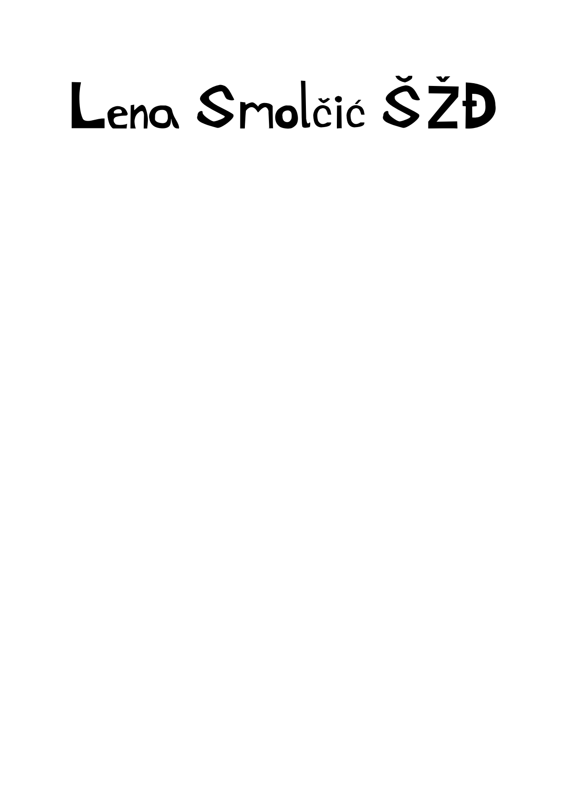
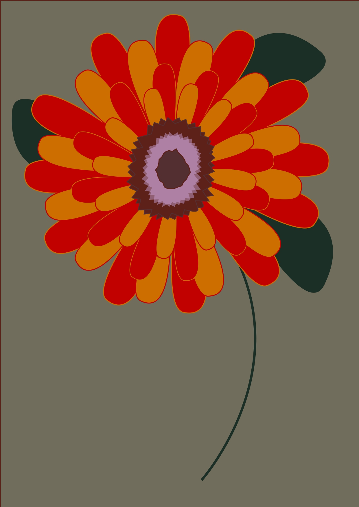
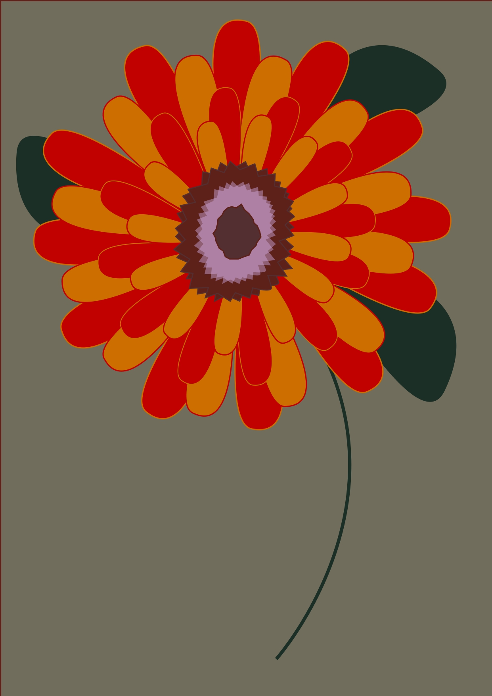
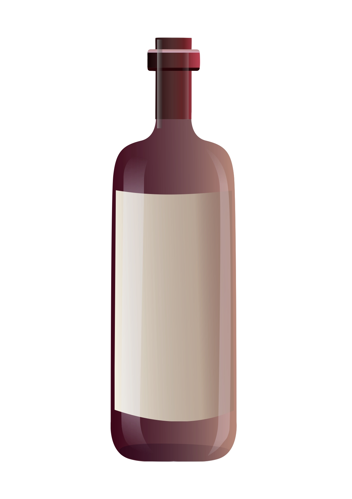
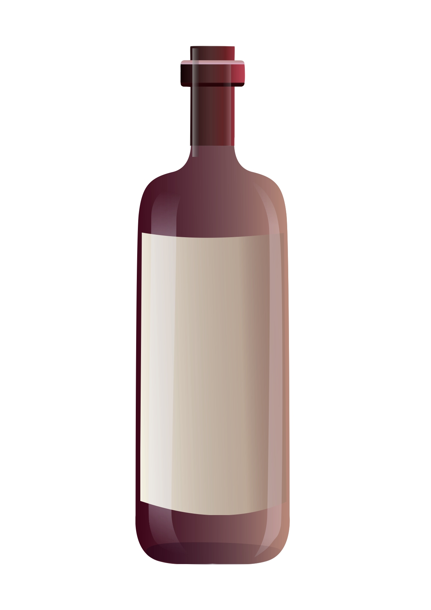
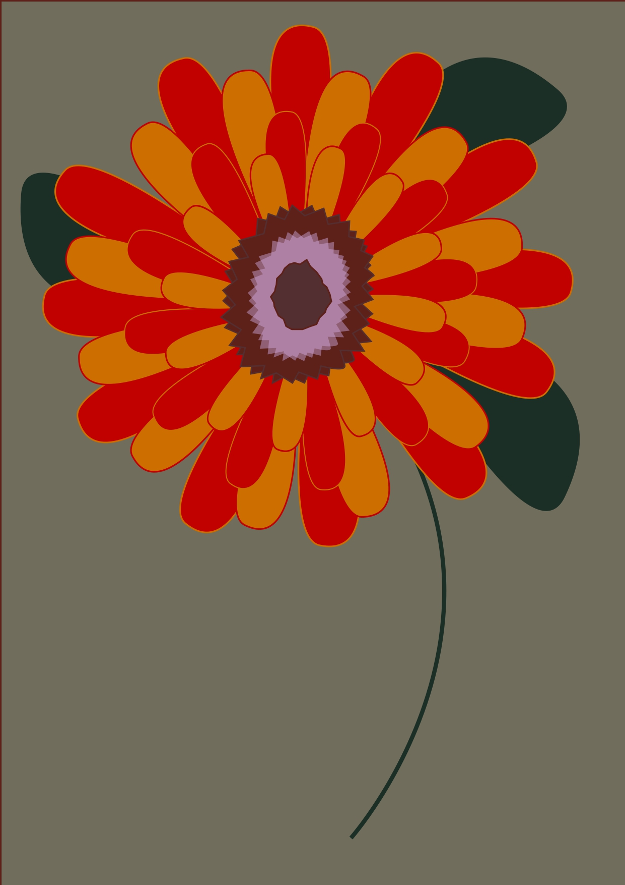
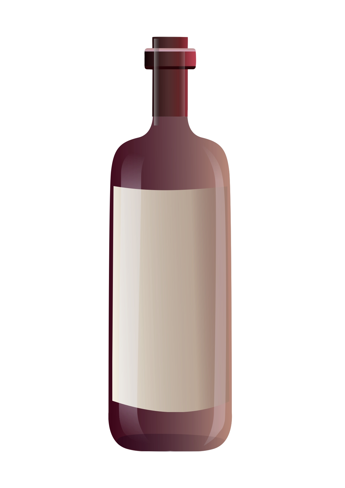
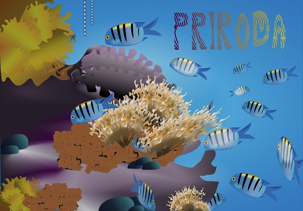
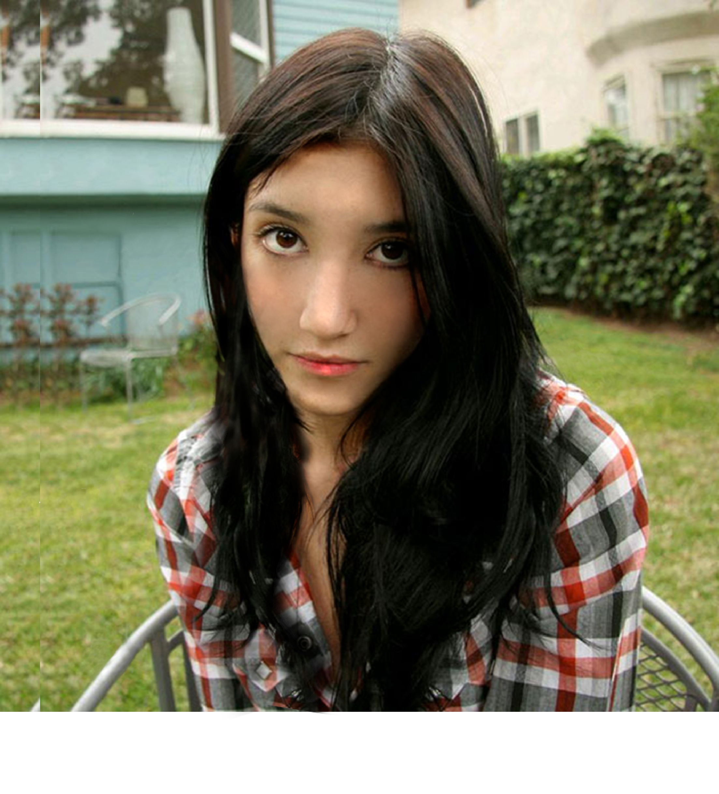

INKSCAPE
Vježbe
Ovo su moje vježbe iz Inkscape-a i FontForge-a.

 


 



Kolokvij
Projektni zadata vektorske grafike izrađen u Inkscape-u. Tema je bila OCEAN.

GIMP
Vježbe
Ovo su moje vježbe iz GIMP-a.



Kolokvij
Projektni zadatak uređivanja fotografija izrađen u GIMP-u.

Video
Vježbe
Ovo su moje vježbe iz video montaže korištenjem različitih tehnika kao što su rezanje, prijelazi i efekti. Napravljeni su DaVinci Resolve-om.